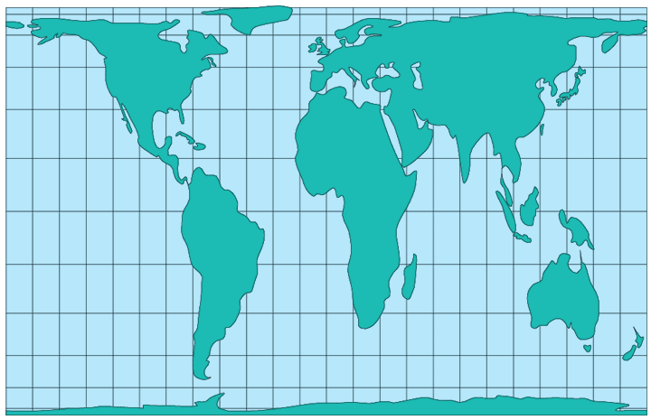

Gall Cylindrical Equal Area (45 degrees)
Usage

Usage:*
The fourth of seven
projections proposed by Johann Hinrich Lambert, and occasionally given
his name (Lambert's Cylindrical Equal-Area
), is the Cylindrical Equal-Area. James Gall (1855) of Scottland developed
the earliest variation of the Cylindrical Equal-Area aptly named the Gall
Cylindrical Equal-Area projection. The Gall Cylindrical Equal-Area
projection is a modified version of the Cylindrical Equal-Area, where the
projection is compressed from east to west and expanded by the same ratio
from north to south, thereby moving the parrallel of no distortion from
the Equator to latitude 45 ° .
* Usage information source:
Snyder, John P. Map Projections - A Working Manual Paper U.S. Geological
Survey Professional Paper 1395. Washington: United States Government
Printing Office, 1987.